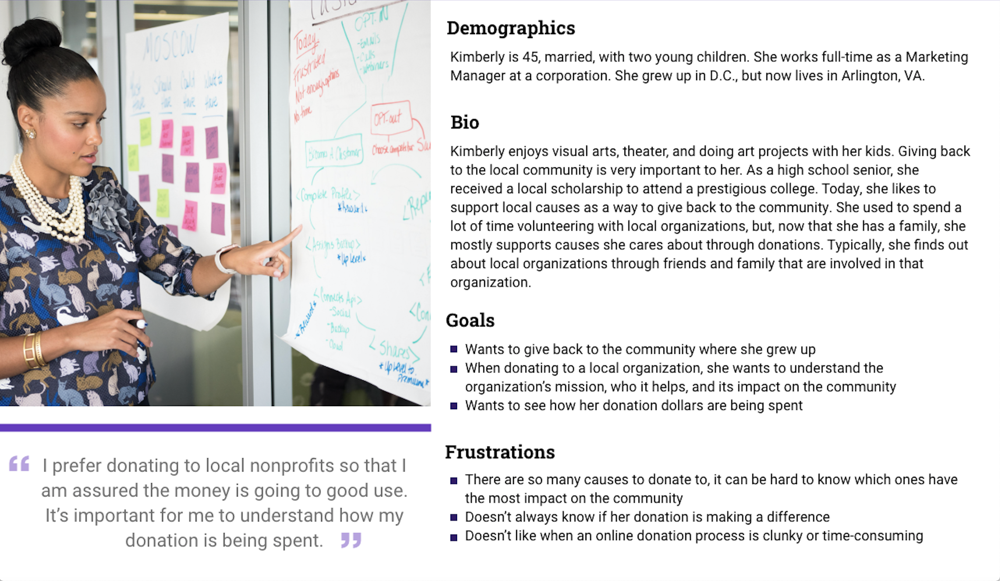

Based on five one-on-one interviews with Project Create staff and families, we discovered:
- Increasing the number of individual donors is a key priority for the organization
- While many users connect with Project Create through social media, the website should be the place to attract existing and new potential donors
We sent out a survey to learn more about what potential donors are looking for when giving to a cause. Key insights included:
- Donors need to clearly identify the mission of an organization in order to give
- Donors need to know where their money is going in order to feel confident to donate money or goods
DEFINTION & IDEATION
We created a persona, Kimberly, a donor to Project Create. Designing for Kimberly that her dollars are making a specific and meaningful impact.
1) In this initial mobile prototype, I sketched out ways for users to select the time frame for donating - once or monthly - and corresponding dollar amounts to match.
2) I also explored different layouts for itemizing ways to give using the existing external pay services, PayPal and Network for Good.
1) Student and teacher testimonials in hero section
2) Prominent donate button above the fold
3) Updated "News and Events" and "Featured Classes"
4) A variety of donation options for users
5) Suggested giving amounts
6) Itemization of purchases correspond to dollar amounts
7) Personalized thank you note
TESTING & ITERATION
Based on testing and iteration, I created a prototype that incorporates user suggestions:
- Easy to find donation buttons above the fold
- Identifying more service offerings above home page fold, including news and events that are easy to find at a glance
- Greater accuracy in defining the organization as illustrated by the About Page
- A donation page that provides details about where funds will be allotted, as well as options for donors to select priority areas of spending
Combining the above with ongoing heuristic evaluation, I also included a personalized “Thank You” page from the Project Create director to reinforce the relationship between the organization and its supporters.
CONCLUSION
During the redesign process, I drew on primary and secondary research to reflect on Project Create’s growth as an organization and how the website can help it to carry out its strategic goals for donorship. The design and prototyping phases of the project revealed how a user flow that consistently carries out the message of Project Create’s commitment to its students and the arts can strengthen the nonprofit’s appeal to donors.
VIEW MORE PROJECTS
Card title
This is a wider card with supporting text below as a natural lead-in to additional content. This content is a little bit longer.
Last updated 3 mins ago
Card title
This card has supporting text below as a natural lead-in to additional content.
Last updated 3 mins ago
Card title
This is a wider card with supporting text below as a natural lead-in to additional content. This card has even longer content than the first to show that equal height action.
Last updated 3 mins ago